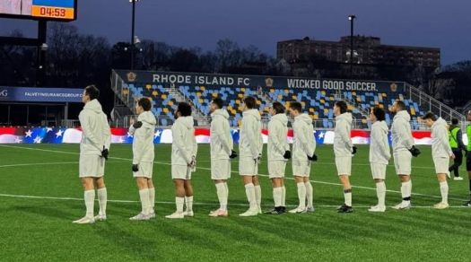
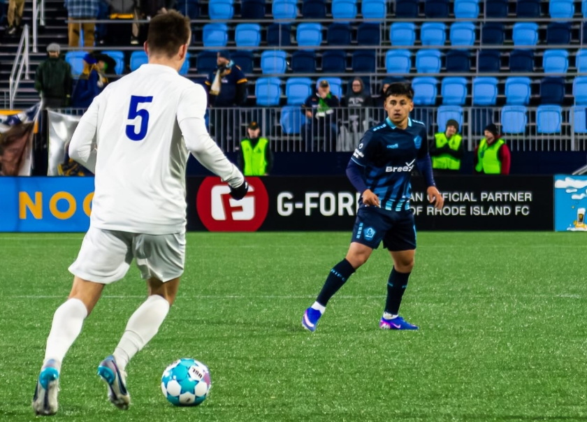
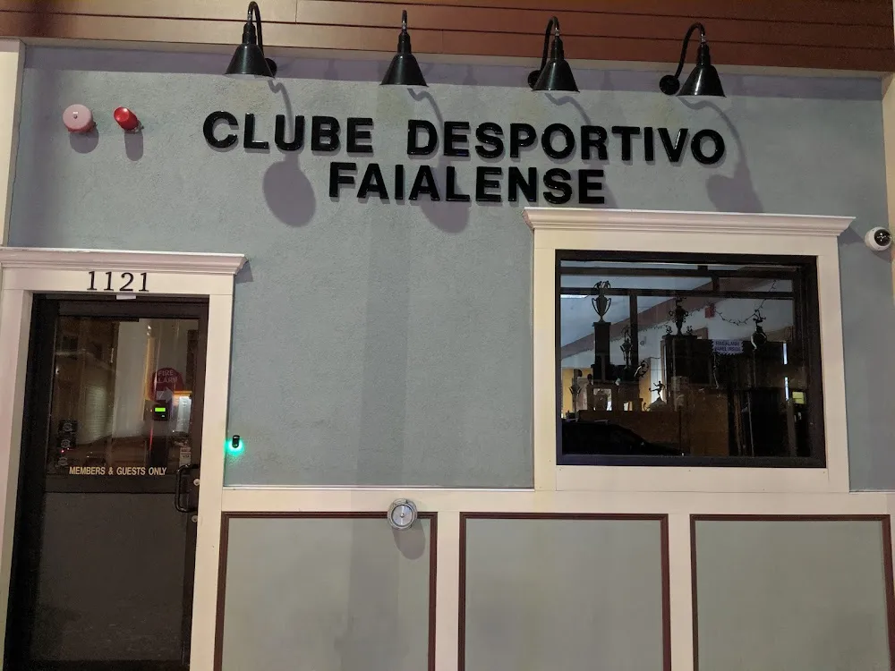

Founded in 1971 by immigrants from Faial in the Azores, CD Faialense has built its identity around soccer, family, and community. From its early days in East Cambridge Massachusetts to its modern resurgence with back-to-back Open Cup appearances, the club continues to honor its Portuguese roots. Today, Faialense combines a proud history with a new generation of talented players, competing in the Bay State Soccer League while continuing to build toward an even greater future.
Our History →

